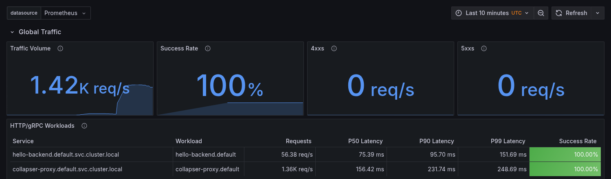
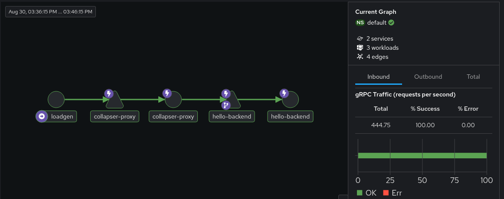

A gRPC sidecar that collapses duplicate in-flight requests into one backend call.
I wrote this to learn how sidecars, Kubernetes and Istio actually behave rather than reading about them. This page is what I measured, including the parts I got wrong on the first pass.
When several callers ask a service the same question at the same time, the service answers it once per caller. The sidecar sits in front and gives them all the same answer from a single backend call.
The first request for a given key calls the backend. Anything arriving while that call is in flight waits on the same result instead of starting its own. A short result cache (100 ms) covers the gap just after a call finishes.
Envoy already does load balancing, retries and telemetry for this traffic, but it has no concept of two requests being the same request. That gap is the whole reason this exists.
Three separate paths, benchmarked separately. Mixing them in one benchmark is the mistake I made first — see below.
| Path | Time | Bytes | Allocs |
|---|---|---|---|
| Cache hit | 45.7 ns | 0 B | 0 |
| Joining an in-flight call | backend-bound | 54 B | 0 |
| Leading a call | 1,594 ns | 552 B | 10 |
| No sidecar (baseline) | 0.33 ns | 0 B | 0 |
Go 1.25.5, 11th Gen Core i7-1165G7, 8 threads. For the join path the number that means anything is allocations, not time — a waiter's wall clock is just however long the backend takes. Zero allocations there is the result of waiters sharing one channel instead of each registering their own.
| Test | Requests | Backend calls | Errors |
|---|---|---|---|
| 10,000 concurrent, one key | 10,000 | 2 | 0 |
| 60 s sustained, 100 workers | 391,400 | 392 | 0 |
Race detector on. Goroutine count and heap were flat across 100,000 requests.
Deployed to a local Kubernetes cluster (kind) with Istio 1.28.1, Envoy sidecars injected and mTLS set to STRICT. Backend calls counted by the backend itself, not by the sidecar reporting on its own work.
| Concurrent requests | Straight to backend | Through sidecar |
|---|---|---|
| 100 | 100 calls | 1 call |
| 500 | 500 calls | 1 call |
| 1,000 | 1,000 calls | 1 call |
| 2,000 | — | 1 call |
For the 2,000 run I checked three sources that don't depend on each other: the
backend's own counter said 1, Envoy's
istio_requests_total said 1, and the sidecar's metrics said 1.
A load generator running inside the mesh, sending 600 concurrent requests spread over 25 distinct payloads every 250 ms. Both hops are reported by Envoy, so these are the mesh's numbers rather than mine.


Over that run: 584,000 requests reached the sidecar and 24,304 reached the backend. The ratio is capped by how many distinct payloads the generator uses, not by the sidecar — with one payload it collapses to a single call.
These were all in the version I had already written up before I went back and measured properly.
COLLAPSER_KEY_HEADERS so those requests stay
separate. This one bothers me most, because the code looked correct.
proto. That is what makes the proxy work without generated
stubs, but it means the package can't be imported into a process that needs
normal protobuf marshalling.